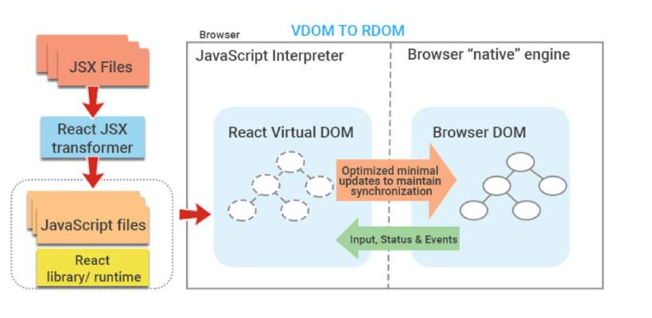
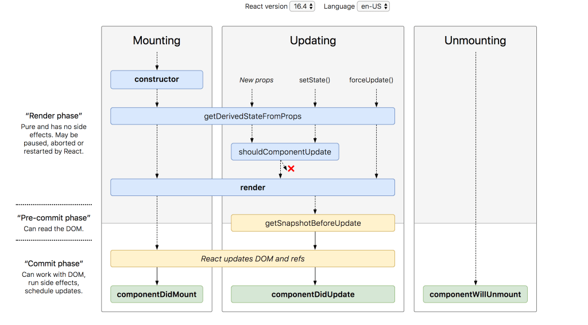

JavaScript libraries
React
React libraries
Websites which use React

JSX and Virtual DOM
JSX
(short for JavaScript eXtension)
JSX allows us to write HTML and JavaScript combined together in the same file
DOM
(document object model)

Virtual DOM
The Virtual DOM is a copy of the site’s DOM, and React JS uses this copy to see what parts of the actual DOM need to change when an event happens.
Without using React JS, the entire DOM would have to update to reflect change. React, on the other hand, scans the Virtual DOM to see what changed after a user action and selectively updates that section of the DOM only.

Components
React makes it much easier to create interfaces by breaking each page into small chunks. These fragments are called components.
A React app can be seen as a component tree — having one root component (“App”) and then many nested child components.
These are like javascript functions. They accept arbitrary inputs (called “props”) and need to return/ render some JSX code (React elements) which describes what should appear on the screen.

Function Components
The simplest way to define a component is to write a JavaScript function. This function is a valid React component because it returns a React element. We call such components “function components” because they are literally JavaScript functions.
The second way is to use ES6 syntax for creating a functional component. For this we have to use the arrow function as below:

The third way of creating a functional component. Here also we will use ES6 but we will modify our arrow function.
So a Functional Component in React:
- is a JavaScript/ES6 function;
- must return a React element (JSX);
- always starts with a capital letter (naming convention);
- takes props as a parameter if necessary.
Class Components
You can also use an ES6 class to define a component. Different from functional components, class components must have an additional render( ) method for returning JSX.
A Class Component:
- is an ES6 class, will be a component once it ‘extends’ a React component;
- takes Props (in the constructor) if needed;
- must have a render( ) method for returning JSX.
Rendering a Component
One of important concept of components is how they communicate. React has a special object called a prop (stands for property) which we use to transport data from one component to another.

Props are custom values and they also make components more dynamic. Since the React component is the child here, we need to define props on its parent (App), so we can pass the values and get the result simply by accessing the prop "name".
Lifecycle Methods
render()
componentDidMount()
Method is called as soon as the component is mounted and ready. This is a good place to initiate API calls, if you need to load data from a remote endpoint.
componentDidUpdate()
componentWillUnmount()
shouldComponentUpdate()
getDerivedStateFromProps()
getSnapshotBeforeUpdate()
More information about React you can find on the official site
reactjs.orgGo to the first slide